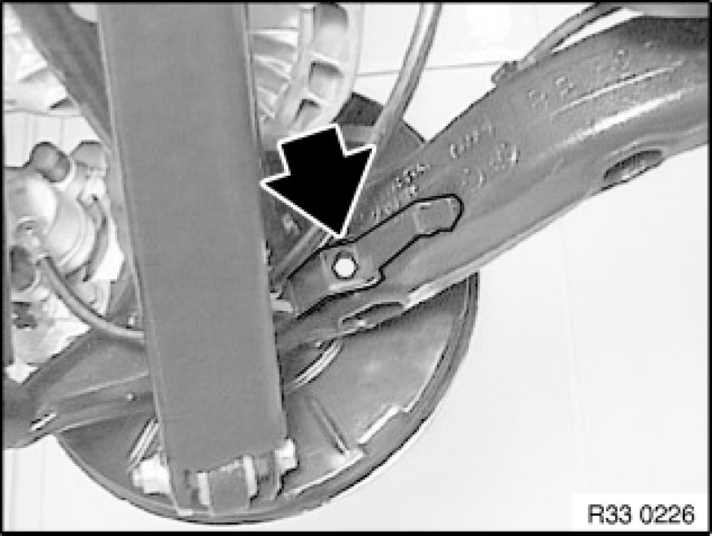
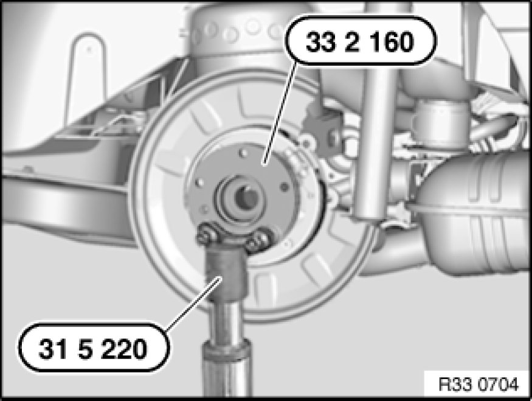

Removing and Installing Complete Left or Right Trailing Arm
33 32 000 - Removing and installing complete left or right trailing arm

Special tools required:
- 31 5 220 31 5 220 Support
- 33 2 160 33 2 160 Spacer Ring

Necessary preliminary tasks:
- Remove output shaft
- Remove brake disk Removing and Installing/Replacing Both Brake Discs (Rear)
- Disconnect handbrake Bowden cable from expander lock Service and Repair
- Remove pulse generator Replacing a Rear Pulse Generator
- Only on right side: remove brake pad sensor

Important!
- Check sensor head and line from pulse generator prior to installation for external damage, replacing if necessary.

Important!
Risk of damage!
Brake hose must not be exposed to tensile loads.
Release screw and remove bracket with brake hose.
Tightening torque 34 32 3AZ 34 32 Brake Lines.

Warning!
Danger of injury!
Failure to comply with the following instructions may result in the vehicle slipping off the lifting platform and critically injuring other persons.
When supporting components, make sure that
- the vehicle can no longer be raised or lowered
- the vehicle does not lift off the locating plates on the lifting platform

Remove coil spring Removing and Installing/Replacing Rear Left or Right Coil Spring.
Secure special tools 31 5 220 31 5 220 Support and 33 2 160 33 2 160 Spacer Ring with wheel studs to drive flange.
Support trailing arm with special tool 31 5 220 31 5 220 Support and workshop jack.
Remove bearing block from body Replacing Bearing Block for Front Trailing Arm.
Remove lower control arm from trailing arm.
Remove upper control arm from trailing arm Replacing One Upper Control Arm.
After installation:
- Adjust handbrake Adjustments
- Perform chassis alignment check